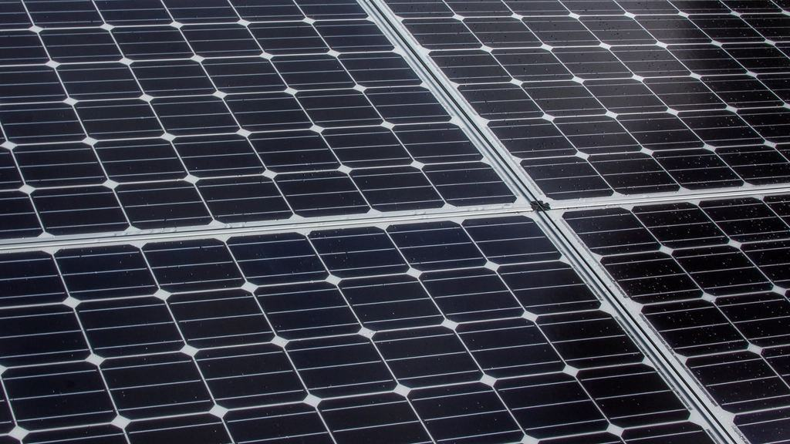
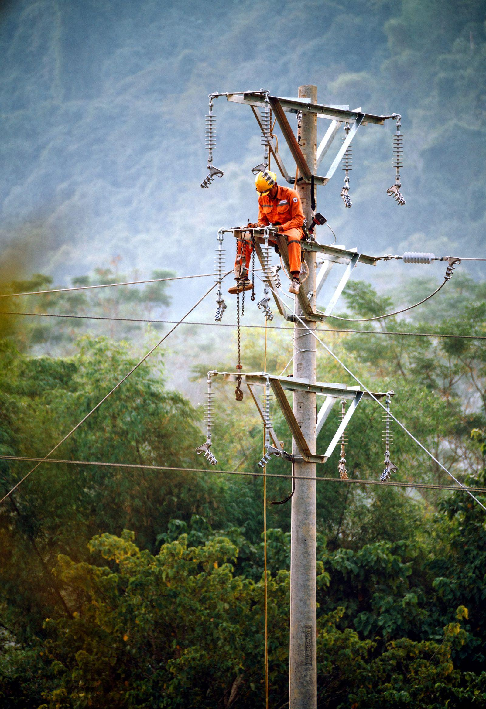
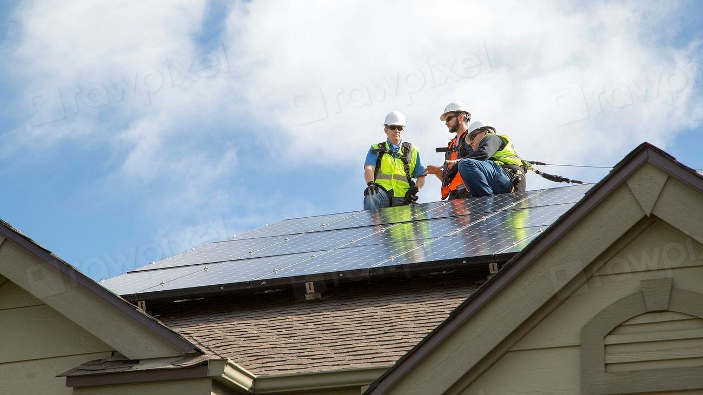
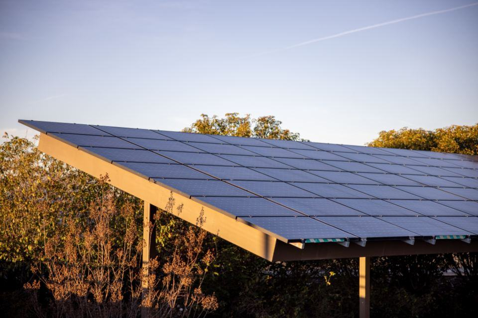
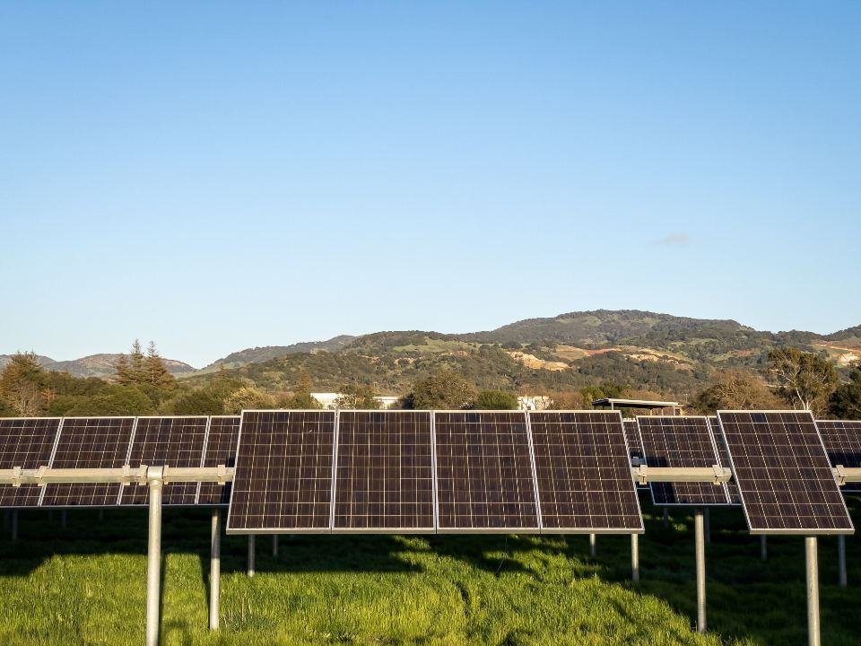
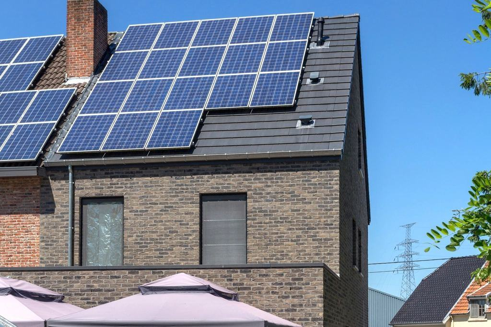
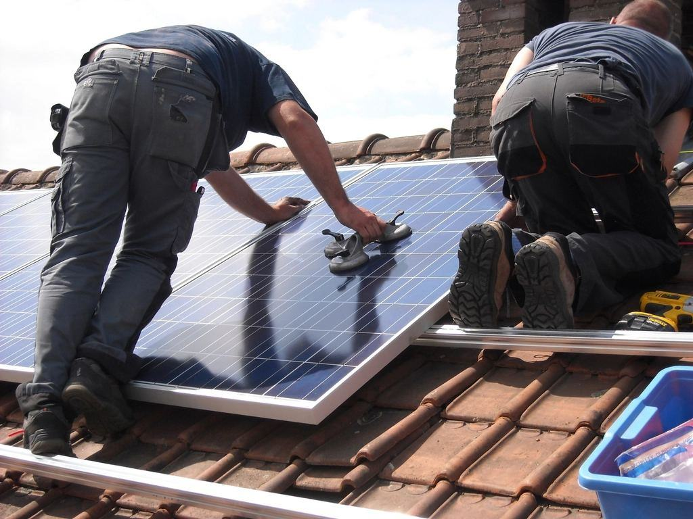
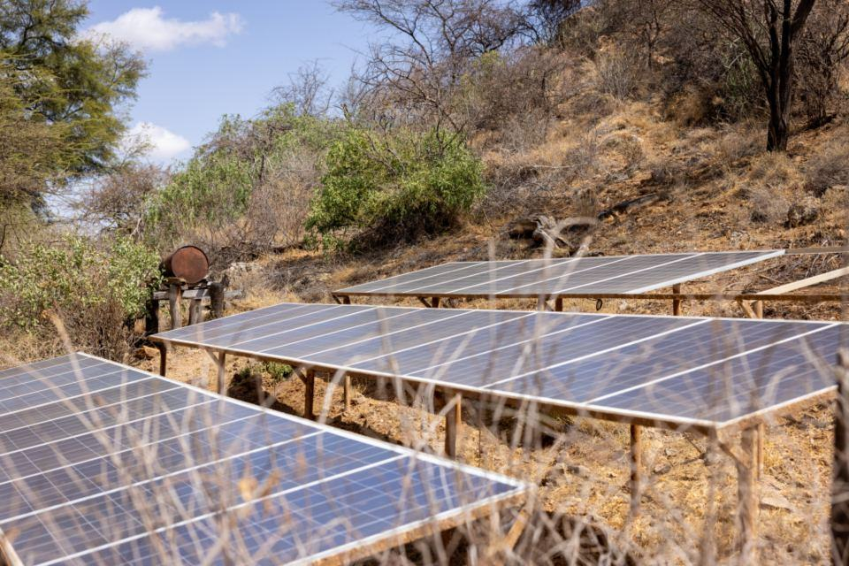

Från butikstaken
- 01

Butiken i Lindsdal täcker 38 procent av kylan
En anläggning på 140 kW och ny styrning sänkte elräkningen med 214 000 kronor första året.
Läs mer - 02

Sommarbutiken i Byxelkrok
I juli förbrukar butiken tre gånger så mycket el som i februari – solcellerna följer kurvan.
Läs mer - 03

Bensinstation med solcellstak i Nybro
Taket över sex pumpar ger el till tvätthallen och fyra laddstolpar.
Läs mer
Handlarna om resultatet
Gunilla förstod kylan bättre än vår egen kylfirma. Kalkylen höll på kronan efter första året.
Magnus S.KalmarDe byggde på nätterna i tre veckor. Kunderna märkte ingenting förutom en ny skylt om solel vid kassan.
Eva-Karin J.FärjestadenVi har sommarbutik på norra Öland och trodde inte att det skulle löna sig. I juli täcker taket nästan hela kylan.
Lars-Olof N.Byxelkrok
Så går ett butiksprojekt till
- 01
Timvärden och kylschema
Vi läser ut butikens förbrukning timme för timme och går igenom kylanläggningen.
- 02
Kalkyl per butik
Handlaren får en kalkyl som visar besparing per månad och återbetalningstid.
- 03
Montage utan stängning
Vi bygger tidigt på morgonen eller nattetid och spärrar aldrig av entrén.
- 04
Styrning och uppföljning
Kylan kopplas till solproduktionen och handlaren får en månadsrapport.


Frågor från handlare och fastighetsägare
Hittar du inte svaret? Ring eller mejla oss.
01Hur stor anläggning behöver en matbutik?
En butik på 1 500 kvadratmeter har ofta nytta av 80–150 kW. Vi dimensionerar efter era timvärden så att nästan ingenting behöver säljas till nätet.
02Påverkar styrningen livsmedelssäkerheten?
Nej. Styrningen arbetar bara inom de temperaturgränser som kylentreprenören har satt, och larmen fungerar som vanligt.
03Måste butiken stänga under montaget?
Aldrig hittills. Vi bygger före öppning eller efter stängning och leder kablar så att inget syns i butiken.
04Vem äger anläggningen om vi hyr lokalen?
Det avtalas mellan er och fastighetsägaren. Vi har byggt både åt handlare som hyr och åt fastighetsägare som säljer elen vidare.
05Godkänner kedjan solceller på taket?
De flesta kedjor uppmuntrar det. Vi tar fram det underlag som kedjans fastighets- och hållbarhetsavdelning brukar efterfråga.
06Hur snabbt tjänar butiken in anläggningen?
För matbutiker med hög egenanvändning brukar den ligga på sex till nio år, beroende på elpris och takets skick.
En kyltekniker och en elektriker i handeln

01 / 04118butikerOch stationer med våra solceller
02 / 0493 %Egenanvändning i snitt
03 / 0413anställdaKyltekniker och elektriker
04 / 042015Första butikstaket i KalmarGunilla Krok servade kylanläggningar i matbutiker längs Kalmarsund i femton år. Hon visste att butikerna hade stora platta tak, hög förbrukning dagtid och handlare som räknade på varje krona. 2015 startade hon Krok & Malm tillsammans med elektrikern Tobias Malm, som hade byggt solceller på lantbruk i Mönsterås.
Alla nyckeltal
Beställ en butikskalkyl
Skriv butikens namn och ort, så hör Gunilla eller Tobias av sig och hjälper dig att ta ut timvärdena.
